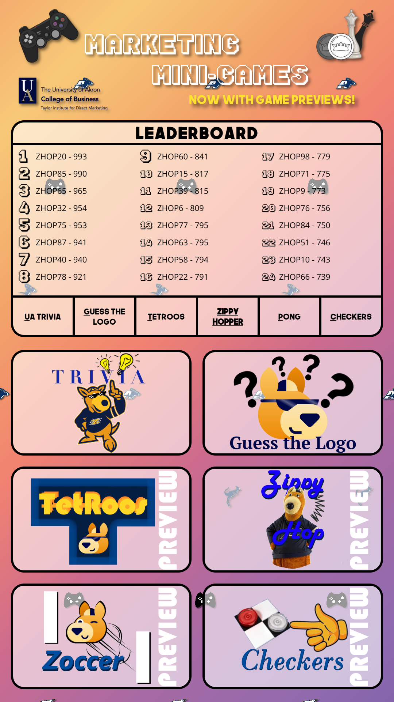

This is the program for one of the two touchscreens in the UA Taylor Institute video wall. It contains some minigames relating to The University of Akron, Taylor Institute, and marketing. This project is coded in C++ and QML using the Qt 6 GUI library and the Qt Creator IDE.
There are/will be 6 minigames:
Documentation can be found in the Wiki tab including how to set up your development environment, how the code works, information about the kiosk machine, and much more.
The project is currently targeting Qt 6.9.
Executables can be found in the Releases tab.